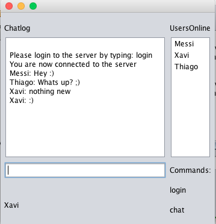
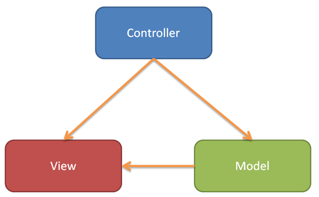

CA 1 Chatsystem
by
Yousef Mohsen & Janus Udsen
Afleveres søndag 19/02/2017
Link til GitHub:

Download client

(På grund af manglende undervisning i maven og pom-filer, er det ikke lykedes os at lave en fungerende jar-fil. Klienten kan derfor kun tilgåes ved at downloade projektet og bygge det lokalt. )
Brugvejledning
For ar bruge dette chatsystem skal man bruge en chatklient, der er integrieret med dette protocol. Vi anbefaler dig at bruge vores chatklient, da det er den bedste tilgængelig løsning, men du kan også bruge andre klienter der virker med den tildligere nævnte protokol. I så fald skal du sørge for at klienten er forbundet med ip 138.68.93.230 og port 8081.

Sådan ser start skærmen ud. Her kan du se listen over onlinebrugere, læse seneste beskeder, samt selv sende beskeder.
Tilgængelig commands
login : for at logge ind på chatten.
chat : for at ændre tilstanden mellem privat- og fælleschat
System design
Vores GuiClient er designet ud fra MVC pattern, hvor vi har model view control. Vores model pakke indeholder så en klasse som hedder client som står for at starte 2 tråde en for at skrive til serveren og en til at læse det der kommer fra serveren. Det er gjort så man kan bruge guien samtidig med at det sker. Vi fandt også ud af at det ville være smart at bruge observables så læse tråden kan notifie gui når den læser noget fra serveren, således at tråden nemt kan sende beskederne til gui, og at man nemt kan udskifte sit gui med et andet. Server delen er mere simpel og derfor har vi holdt den mere simpel, og har følgt protokollen og sørger for at vi håndterer connections ved at lave en tråd til hver connection så vi kan have flere end en connection af gangen. 
Test mod en anden gruppe
Fredag testede vi vores chatserver og client mod en af de andre gruppers server + client. Vi testede først vores server og fandt ud af at der var et problem med vores disconnect funktion. Da vi testede vores client mod en af de andres server (vetterlain.dk) fandt vi hurtigt ud af at vores client ikke kunne læse private beskeder, så vidste vi hvad vi skulle arbejde på, men ellers virkede vores protokol godt og vores server + client virkede fint.